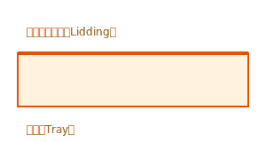
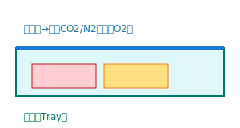
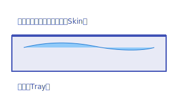
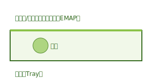
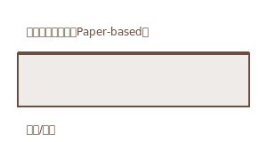

食品包装形式科普（托盒封口机相关）
总览
- 托盒封口（Tray Sealing）可实现：常压封口（Lidding）、MAP改良气调、VSP真空肌肤、EMAP平衡气调、纸基与可持续方案。
- 选择依据：产品属性（呼吸/水分/形态）、渠道场景（商超/餐饮/到家）、经营目标（货架期/呈现/效率/成本/合规）。
常压封口（Lidding）
- 定义：不抽真空、不充气，在托盘表面热封上膜形成密闭或半密闭。
- 适用：即食餐、熟食、部分短保SKU；强调成本与效率。
- 关键点：密封完整性、膜与托盘匹配、标签与追溯。

参考与实物照片： - 热封/Just Sealed（官方）：https://www.gmondini.com/
MAP（Modified Atmosphere Packaging）改良气调
- 定义：抽真空后充入混合气体（CO2/N2），降低O2以延长货架期。
- 适用：鲜肉、海鲜、熟食分装、部分即食餐；以残氧与泄漏为核心指标。
- 关键点：气体配比与稳定性、残氧目标（常见≤0.5–1.0%）、泄漏测试与抽检频率。

参考与实物照片： - 技术归档（含MAP简介与适用品类）：https://www.gmondini.com/platform-technology
VSP（Vacuum Skin Packaging）真空肌肤（Skin）
- 定义：上膜在真空下紧贴产品轮廓，与托盘热封，形成“第二层皮肤”。
- 适用：高客单价蛋白、海鲜、精致熟食；呈现度高、保形好。
- 关键点：膜贴合与穿刺强度、切边质量、陈列与品牌视觉。

参考与实物照片： - Vacuum Skin 技术页：https://www.gmondini.com/technology/cat/vacuum-skin - Standard Skin：https://www.gmondini.com/technology/standard-skin - Darfresh® on Tray：https://www.gmondini.com/technology/dot
EMAP（Equilibrium MAP）平衡气调
- 定义：依靠膜的透气性或微孔实现气体自调节，与呼吸型产品达成平衡。
- 适用：蔬果、鲜切；关注冷凝与水汽，防雾与防挤压设计。
- 关键点：膜透气参数与产品呼吸强度匹配、防雾处理与支撑结构。

参考与实物照片： - 技术归档（含EMAP概述）：https://www.gmondini.com/platform-technology
纸基与可持续方案（Paper-based / Skin on Board）
- 定义：使用纸板作为承载或背衬，与膜热封；可提升可回收与外观质感。
- 适用：品牌强调可持续与陈列美观的SKU。
- 关键点：耐潮与强度验证、切边与膜利用率、材料合规与标签。

参考与实物照片： - Paperseal® SKIN：https://www.gmondini.com/technology/paperseal-skin
决策与对比（管理视角）
| 维度 | 常压封口 | MAP | VSP/皮肤 | EMAP | 纸基方案 |
|---|---|---|---|---|---|
| 目标 | 成本与效率 | 货架期与稳定 | 呈现与保形 | 呼吸平衡 | 可持续与外观 |
| 指标 | 密封完整性 | 残氧/泄漏 | 贴合/切边 | 透气参数 | 耐潮/强度 |
| 场景 | 即食与熟食 | 鲜肉/海鲜/熟食 | 高端陈列蛋白 | 蔬果鲜切 | 多类SKU |
| 风险 | 易泄漏 | 气体不稳 | 膜穿刺 | 冷凝水汽 | 受潮变形 |
与设备平台的映射
- TRAVE 350（平台概念）：通过更换工具运行多种包装技术，强调卫生设计与高效切边与膜利用；支持纸基与多材料托盘，整线集成能力强。
- TS350：面向托盒市场的MAP/VSP能力与格式柔性，兼容纸基与塑基托盘，预留残氧与检漏接口，关注换型效率与OEE。
验收与KPI建议
- 节拍与产能：托盘/分×道数×稼动率；记录稳定运行时长与停机原因。
- 残氧与泄漏：设目标区间与抽检频率，建立留样与问题复盘机制。
- 换型与柔性：刀具/格式切换时间与恢复节拍时间；托盘兼容范围。
- 卫生与清洗：可清洗结构与排水；清洗时间纳入验收。
- 成本与可持续：膜利用率与骨架废料、纸基替换比例、能耗与备件。
延伸阅读
- 基础速成：
docs/technology/packaging-basics.md - 客户场景与渠道诉求：
docs/market/customer-scenarios.md - TS350映射：
docs/product/ts350-mapping.md
按八大品类的包装建议（结合行业实践）
- 肉类（Meat）：MAP为主，残氧与泄漏控制，抑制氧化与变色；高端陈列可用VSP提升呈现与保形。膜需防穿刺与防雾，托盘支撑强度要足。
- 禽类（Poultry）：MAP控制微生物与气味，关注渗液管理与二次包装；促销季SKU多，强调换型与节拍稳定，VSP用于小包装增颜值。
- 奶酪（Cheese）：硬质奶酪可真空或VSP，切片与高端可用VSP呈现；软奶酪与新鲜奶酪偏MAP，关注气体比例与水汽控制。
- 蔬果（Produce）：EMAP或透气膜适配呼吸强度，防雾与冷凝管理关键；脆弱类需防挤压托盘与支撑结构。
- 烘焙/饼干/糖果（Bakery, Biscuits, Confectionery）：常压封口或轻度MAP以防潮与氧化；关注膜水汽透过率与二次包装稳定性。
- 预制菜（Ready Meals）：常压或MAP，强调加热便捷（微波/烤箱膜与托盘）、标签与追溯；批次一致与快速换型关键。
- 鱼类与海鲜（Fish-Seafood）：MAP降低氧化与腥味传播，高端生食与冷冻可用VSP防冻灼与保形；膜防穿刺要求高。
- 医疗与医药（Medical-Pharma）：需洁净环境与密封完整性验证，材料与封口参数需符合医疗器械包装规范，本项目以食品为主仅提供平台级封口能力说明。
参考类别导航：https://www.ulmapackaging.com/en